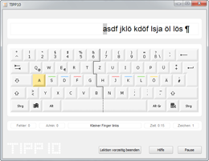
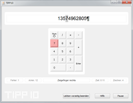

Trainingsparameter | Inhaltsverzeichnis | Lernstatistik
Trainingsparameter | Inhaltsverzeichnis | Lernstatistik 
6.3 Trainingsablauf
Ihnen wird nun das Trainingsfenster angezeigt. Im oberen Abschnitt befindet sich das Laufband, darunter die virtuelle Tastatur. Im unteren Teil informiert Sie eine Statusleiste mit zusätzlichen Informationen.
Bevor Sie mit dem eigentlichen Training beginnen, nehmen Sie zuerst die Grundstellung auf der Tastatur ein. Bitte lesen Sie dazu die Informationen zur Ergonomie am Arbeitsplatz in Kapitel 4.
Anschließend können Sie das Schreibtraining über die Leertaste starten. Sobald Sie diese Taste betätigt haben, beginnt die Zeitzählung und der zu tippende Text erscheint im Laufband.

Je nachdem, welche Einstellungen Sie vorgenommen haben, werden Ihnen die Grundstellung und die zu drückenden Tasten auf der virtuellen Tastatur angezeigt. Die Farbe der Taste weist Sie darauf hin, welchen Finger Sie zum Betätigen dieser Taste verwenden sollen.
Farbschema der virtuellen Tastatur:
Taste wird nicht betätigt (alle Tasten, die für das aktuelle Zeichen nicht von Belang sind)
Taste wird mit dem Zeigefinger betätigt
Taste wird mit dem Mittelfinger betätigt
Taste wird mit dem Ringfinger betätigt
Taste wird mit dem kleinen Finger betätigt
Taste wird mit dem Daumen betätigt (diese Farbe nimmt lediglich die Leertaste an)
Die Statusleiste informiert Sie auf der linken Seite über die aktuelle Anzahl der Tippfehler und Ihre momentanen Anschläge pro Minute. Die rechte Seite zeigt die bereits vergangene Zeit und die Anzahl der absolvierten Schriftzeichen.
Folgen Sie nun der Laufschrift und geben Sie den erscheinenden Text auf Ihrer PC-Tastatur ein. Das jeweils zu tippende Zeichen wird Ihnen dazu in der Laufschrift grau hinterlegt dargestellt.
Hinweis: Es existieren zwei Sonderzeichen, die zusätzlich bestimmte Tasten repräsentieren sollen. Wenn das Schriftzeichen ¶ angezeigt wird, soll die Enter-Taste betätigt werden, ein nach rechts zeigender Pfeil → steht für die Tabulator-Taste (die Taste mit den zwei Pfeilen ganz links auf Ihrer Tastatur).
Sollten Sie das Schreibtraining kurzzeitig unterbrechen wollen, erledigen Sie dies über einen Mausklick auf den Button Pause oder durch die Tastenkombination Alt+P (die Zeitzählung wird dann ebenfalls unterbrochen). Sie können das Training dann jederzeit über die Leertaste fortsetzen.
In Übungslektion 19 und 20 wird der Umgang mit dem Ziffernblock rechts auf der Tastatur geübt - die virtuelle Tastatur zeigt daher bei diesen Lektionen einen Ziffernblock an.

Nach Abschluss des Diktats oder Ablauf der Dauer (je nach Einstellung) wird das Schreibtraining automatisch beendet und die Lernstatistik angezeigt. Wollen Sie das Diktat vor Ablauf der Dauer beenden, klicken Sie auf den Button Lektion vorzeitig beenden oder verwenden Sie die Tastenkombination Alt+B. Bestätigen Sie nun die Sicherheitsabfrage mit einem Klick auf den Button Ja. Anschließend können Sie über einen weiteren Dialog entscheiden, ob die Ergebnisse der Lektion gespeichert oder verworfen werden sollen.
 Trainingsparameter | Inhaltsverzeichnis | Lernstatistik
Trainingsparameter | Inhaltsverzeichnis | Lernstatistik 
© 2006-2011 Tom Thielicke IT Solutions